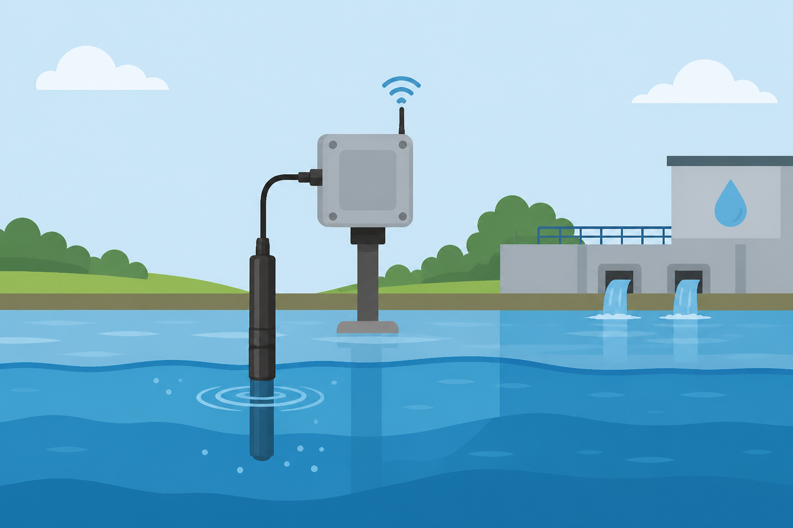
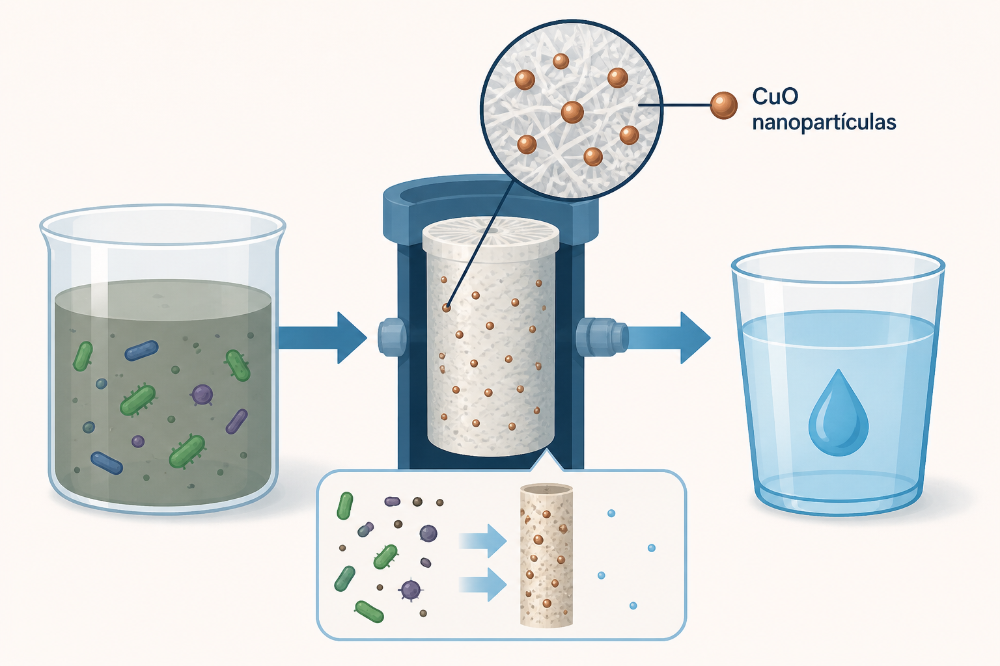
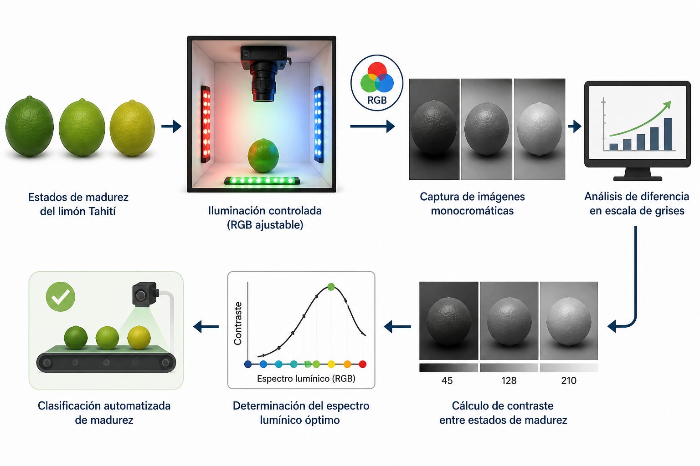
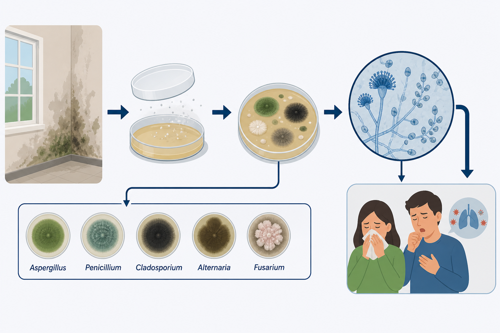
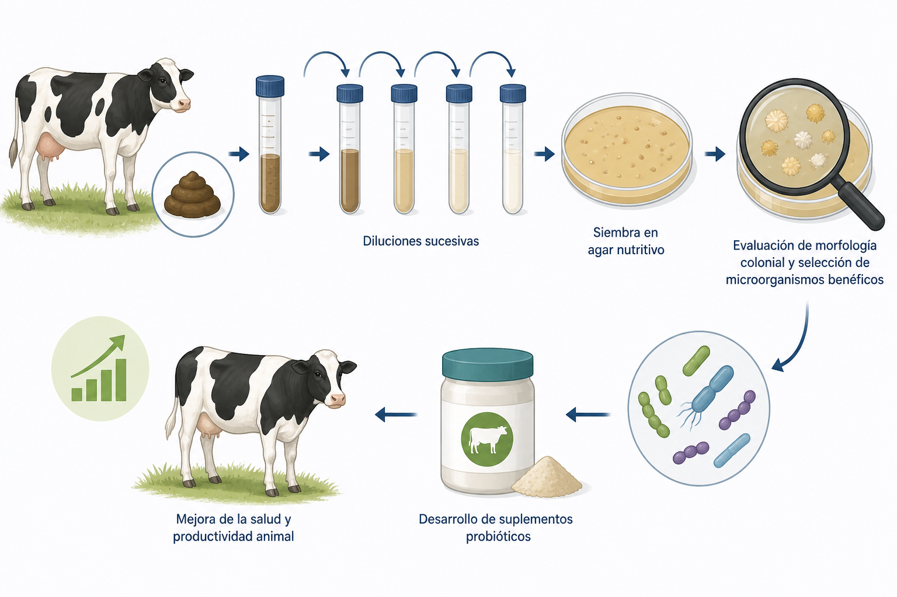

Descubre los proyectos de la Tecnoacademia, un espacio donde la teoría se encuentra con la práctica. Estas iniciativas tienen como objetivo principal permitir a nuestros participantes experimentar, aprender y aplicar sus conocimientos en el desarrollo de prototipos y soluciones tecnológicas.
5 proyectos encontrados

El objetivo del proyecto es implementar un sistema de monitoreo de agua que brinde información confiable sobre los procesos de potabilización, mediante la medición de parámetros clave como el pH, la temperatura, el oxígeno disuelto y la turbidez. Estos valores permiten conocer en tiempo real el estado del agua y determinar su nivel de potabilidad, asegurando que cumpla con las condiciones necesarias para el consumo humano.

Fabricación de membranas funcionalizadas con nanopartículas de óxido de cobre (CuO-NPs) para la desinfección y potabilización de agua a bajo costo.

Evaluación de espectros lumínicos óptimos para maximizar la diferenciación visual entre estados de madurez del limón mediante imágenes monocromáticas y condiciones controladas.

Estudio de la relación entre la humedad en paredes, la presencia de hongos y los síntomas respiratorios en los usuarios de la TecnoAcademia Risaralda.

Aislamiento e identificación de bacterias presentes en la microbiota fecal de ganado con potencial para mejorar la salud y productividad animal.
Descubre un mundo de posibilidades donde tus ideas se convierten en realidad.
Quiero ser parte